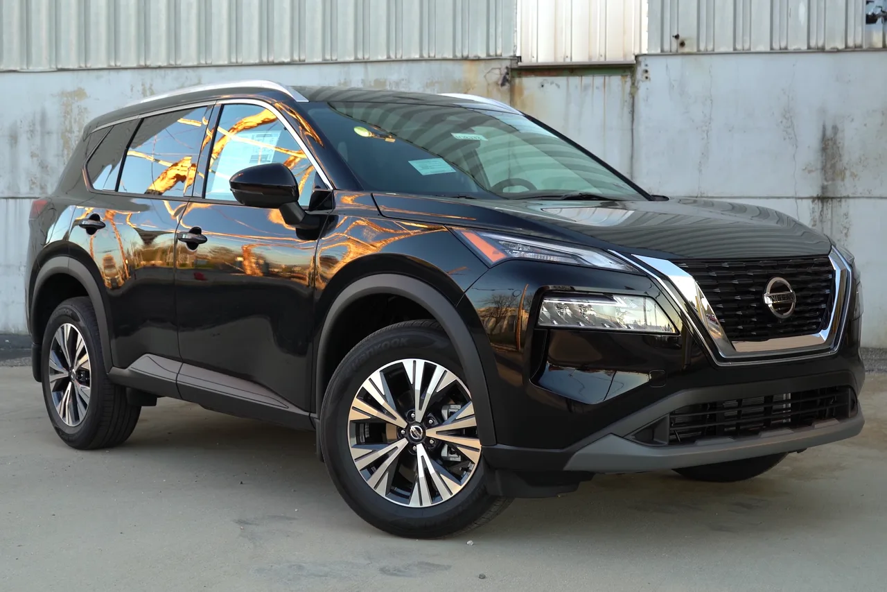

▲ 혼다와 닛산이 ECU와 차량 OS를 함께 만든다. 첫 결과물은 2029 회계연도에 나온다 ⓒ Wikimedia Commons
1. 무엇을 함께 만드나
혼다와 닛산이 차량 기반 기술을 표준화하는 공동 개발에 합의했습니다. 대상은 네 가지입니다.
| 영역 | 내용 |
|---|---|
| 전자제어장치(ECU) | 차세대 SDV의 뼈대가 되는 복수의 표준 ECU |
| 차량 운영체제 | 공통 기반 소프트웨어 |
| 미들웨어 | OS와 응용 소프트웨어를 잇는 계층 |
| 차량 제어 소프트웨어 | 플랫폼을 넘나드는 공통 제어 체계 |
두 회사는 "엔지니어링 역량과 개발 자원을 합쳐 효율을 높이고, 개발 비용을 낮춰 규모의 경제로 경쟁력을 확보하겠다"고 밝혔습니다.
2. 왜 하필 ECU와 OS인가
SDV(소프트웨어 정의 차량)로 가면서 비용 구조가 바뀌었습니다. 과거 차 한 대에는 기능별로 수십 개의 ECU가 흩어져 있었습니다. 이것을 소수의 고성능 ECU로 통합하는 것이 지금 업계의 방향입니다.
문제는 이 통합에 드는 돈입니다. 반도체 설계, OS, 미들웨어, 그리고 그 위에서 돌아가는 제어 소프트웨어를 처음부터 만드는 비용은 엔진 하나를 개발하는 것과 차원이 다릅니다. 그리고 이 비용은 판매 대수로 나눠집니다.

▲ 닛산은 최근 몇 년간 실적 부진과 구조조정을 겪었다. 개발비 분담이 절실한 상황이다 ⓒ Wikimedia Commons
여기서 두 회사의 계산이 맞아떨어집니다. 혼다와 닛산은 각각으로는 중국·미국 대형 업체에 비해 물량이 부족합니다. 합치면 개발비를 나눌 모수가 커집니다. 브랜드를 합치지 않고도 비용만 나눌 수 있는 영역이 바로 소프트웨어입니다.
3. '2029 회계연도'라는 시점
공동 개발 기술이 들어간 첫 차는 2029 회계연도에 나옵니다. 일본 기준으로 2029년 4월 1일부터 2030년 3월 31일까지입니다.
지금부터 3년 반 뒤입니다. 소프트웨어 협업치고는 긴 시간처럼 보이지만, ECU 통합은 차량 아키텍처 자체를 다시 짜는 작업입니다. 새 전기·전자 구조를 적용하려면 차량 개발 주기 한 사이클이 필요합니다.
바꿔 말하면 이 협력의 성패는 2029년까지 확인되지 않습니다. 그 사이 두 회사가 각자 처한 상황이 어떻게 변하느냐가 변수로 남습니다.
4. 포함되지 않은 것
이번 합의에는 구체적인 차종이나 플랫폼이 명시되지 않았습니다. 어떤 차부터 적용할지는 공개되지 않았습니다.
인포테인먼트는 브랜드별로 다르게 갈 가능성이 큽니다. 기반은 공유하되 그래픽과 사용자 경험은 각자 다듬는 방식입니다. 소비자가 실제로 만지는 화면에서는 두 브랜드의 차이가 유지된다는 뜻입니다.

▲ 혼다는 제품 라인업을 재정비하는 중이다. 기반 기술 비용을 줄이면 그만큼 상품 개발에 쓸 여력이 생긴다 ⓒ Wikimedia Commons
그리고 이 협력은 르노-닛산-미쓰비시 얼라이언스와 별개로 진행됩니다. 닛산은 기존 얼라이언스를 유지하면서 혼다와 별도의 소프트웨어 협업을 하나 더 얹은 셈입니다.
5. 미쓰비시가 합류할 수도 있다
미쓰비시가 이 소프트웨어·ECU 협력에 참여하는 방안을 검토 중인 것으로 알려졌습니다. 다만 현재는 공식 참여사가 아닙니다.

▲ 세 회사가 모이면 기반 기술 비용을 나눌 판매 모수가 더 커진다 ⓒ Wikimedia Commons
합류하면 계산이 한 번 더 좋아집니다. 개발비를 나눌 판매 대수가 늘어나기 때문입니다. 동시에 조율해야 할 이해관계도 늘어납니다. 2025년 초 합병 협상이 깨진 이유도 결국 지분과 주도권 문제였습니다.
6. 한국에서 이 소식을 볼 이유
두 브랜드 모두 국내 시장에서는 철수했거나 축소된 상태입니다. 그래서 이 소식이 당장 국내 소비자의 구매 선택에 미치는 영향은 없습니다.
다만 방향은 남의 일이 아닙니다. ECU 통합과 차량 OS 자체 개발은 현대차그룹도 같은 과제를 안고 있는 영역입니다. 규모가 부족한 업체들이 어떤 방식으로 이 비용을 감당하려 하는지를 보여 주는 사례입니다.
또 하나, 경쟁 구도의 변화입니다. 일본 완성차 두 곳이 기반 기술을 공유하면 개별 브랜드의 원가 구조가 바뀝니다. 2029년 이후 북미와 동남아 시장에서 국산차와 부딪히는 조건도 함께 달라집니다.
정리하면 이렇습니다. 혼다와 닛산은 브랜드를 합치는 데는 실패했지만, 차 안에서 보이지 않는 부분부터 합치기로 했습니다. 소비자가 만지는 화면은 그대로 두고, 그 아래를 공유하는 방식입니다. 이 협력이 실제로 굴러가는지는 2029년에야 답이 나옵니다.